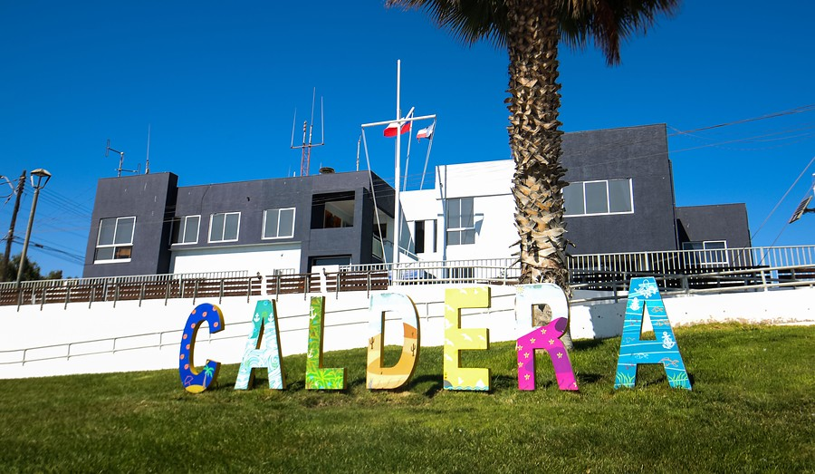
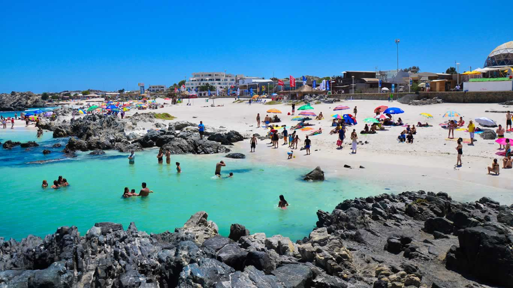

Region de Atacama
La Región de Atacama es una de las dieciséis regiones en que se divide Chile.
Es la puerta de entrada al Norte chico del país. Su capital es Copiapó.
Ubicada en el norte del país , norte chico, limita al norte con la Región de Antofagasta,
al este con las provincias de Catamarca, La Rioja y San Juan pertenecientes a Argentina,
al sur con la Región de Coquimbo y al oeste con el océano Pacífico.
- Está compuesta por las provincias de: Chañaral, Copiapó , Huasco.
- la capital regional es la ciudad de Copiapó.
- localizada a 806 km al norte de la capital nacional, Santiago de Chile.
Comuna de Caldera
Caldera es una ciudad y comuna del Norte Chico de Chile,
perteneciente a la Provincia de Copiapó, en la Región de Atacama.
Es puerto minero, pesquero y agrícola, ubicado a 75 kilómetros de la ciudad de Copiapó (capital regional).
Además Caldera está situada en una zona de interés turístico.
PAGINA WEB CALDERA
Playas mas Visitadas
- Bahia Inglesa
- Playa la Virgen
- Playa Brava
Bienvenidos a Caldera


Visitanos todo el año
Siguiente Pagina
Seguir Leyendo
Pagina 2